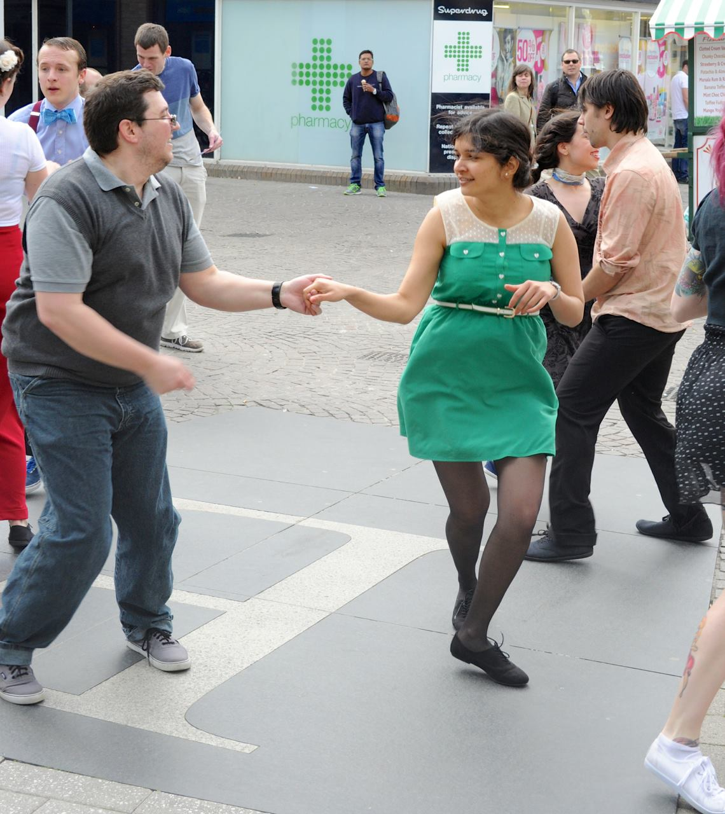

Meet Shivi
The person who brought
Lindy Hop home.
Founder, teacher, DJ, and the one running most of the nights.

Shivi Chandna found Lindy Hop in Cambridge in 2011 and didn't look back. Over the next five years she trained, taught beginner classes, volunteered in the Cambridge swing scene, helped organise the Cambridge Lindy Exchange, and danced her way across the UK, Europe, Japan and China.
In 2016 an ankle injury stopped her dancing. She moved back to India and spent years on recovery. When she was finally able to dance again, she went looking for a Lindy Hop community in Delhi — and found there wasn't one.
So she started it. Swing Out Delhi grew out of a simple wish: to bring Lindy Hop back into her life, and to share it. Today Shivi teaches, DJs, curates events and runs the operations — all so more people can feel what got her hooked in the first place.
In 2026 she'll travel to Thailand Swing Era on a Frankie Manning Foundation scholarship — one small sign of a Delhi scene that's finding its place in the wider swing world.
What she loves about Lindy Hop
- Improvisation
- Freedom
- The conversation between partners
- Musicality
- Laughing mid-dance
- Connection
- Joy